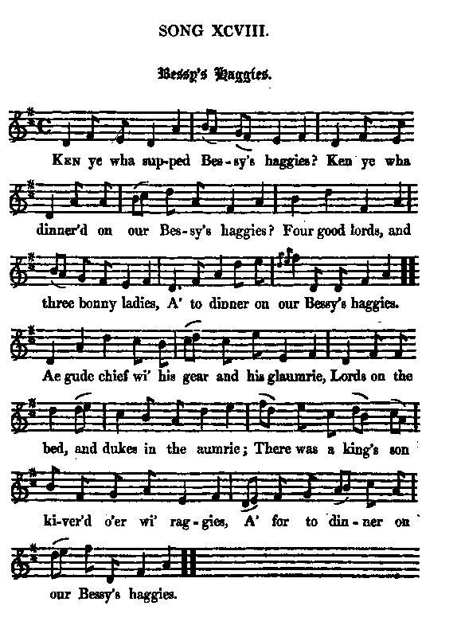
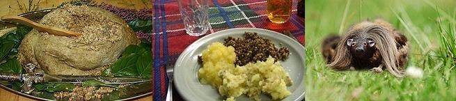

Bessy's Haggies
Les Haggis d'Elisabeth
Jack-o-bite Cooking
Tune - Mélodie"Bessy's Haggies"
from Hogg's "Jacobite Relics" 2nd Series N°98 page 191, 1821
Sequenced by Christian Souchon

|
To the tune:
The tune was published by McGibbon in his "Scots Tunes, Book II", page 32 around 1746. Source "The Fiddler's Companion" (cf. Links). The non-Jacobite lyrics are to be found in David Herd's "Ancient and Modern Scottish Songs", volume I page 196 (1776): Bessy's beauties shine sae bright, Were her many virtues fewer, She wad ever gie delight, And in transport make me view her. Bonny Bessie, thee alane Love I, naething else about thee; With thy comeliness I'm tane And langer canna live without thee. Nowhere in the tree stanzas does the word "haggie" appears otherwise than in an allusive way: "he who takes her to his arm of her sweets can ne'er be cloy'd". A jocular ( untranslatable) French ditty expresses the same idea in a far more trivial way. "Mr Gordon, of Ford, communicated this song to the Ettrick Shepherd, who gives it as an antique. The tune is older than the year 1745 ; but the words evidently refer to that period. The sentiment would hardly seem to be justified by facts, if an anecdote told of old Lady Drummuir be authentic. When the Duke of Cumberland took the command in Scotland and advanced against the Highland army, it was remarked that at Holyrood- House, Falkirk, and other places, he occupied the same quarters, the same room, and the same bed which Prince Charles had previously vacated . In like manner, when he entered Inverness, after the victory of Culloden, he took up his lodgings in the house of Lady Drummuir, whose daughter, Lady McIntosh , had there acted as the presiding divinity of Charles' household for two months before. How this venerable Jacobite entertained him is not recorded; but the comment which she was accustomed to make on the singular circumstance of her having lodged both Princes, betokened no great relish for the familiar presence of royalty: " I've ha'en twa Kings' bairns," said she, "living wi' me, in my time ; but, to tell you the truth, I wish I may ne'er ha'e anither." Source: Jacobite minstrelsy by Robert Malcolm, 1828. |
A propos de la mélodie:
La mélodie est publiée par McGibbon dans ses "Scots Tunes, Livre II", page 32, vers 1746. Source "The Fiddler's Companion" (cf. Liens). Les paroles non-Jacobites se trouvent dans les "Chants écossais anciens et modernes" de David Herd, volume I, page 196 (1776): Betty, tes charmes sont si grands Que si tes vertus étaient moindres Je n'aurais lieu ni de me plaindre Ni d'être déçu pour autant. Jolie Bessie, c'est toi que j'aime Et rien d'autre te concernant. Ta grâce pénètre en moi-même. Sans elle, je meurs à l'instant. Nulle part dans les trois couplets le mot "haggis" n'apparaît, si ce n'est de façon allusive: "Celui qui la tient dans ses bras, ne peut se rassasier de ses douceurs". Traduction libre: "Paulette, si tu n'aimais pas les paupiettes, notre amour ne serait pas si beau". "M. Gordon de Ford a communiqué ce chant au Berger d'Ettrick qui le donne comme ancien. La mélodie date d'avant 1745, mais les paroles se rapportent bien évidemment à cette période. Les sentiments qu'elles expriment semblent difficilement justifiés par les faits, si tant est que l'anecdote rapportée par la vieille Lady Drummuir soit authentique. Quand le Duc de Cumberland arriva en Ecosse à la poursuite de l'armée des Highlands, on remarque que, tant à Holyrood-House, Falkirk qu'en d'autres endroits, il dormit à la même adresse, dans la même chambre et le même lit que le Prince Charles avant lui . C'est ainsi que lorsque il entra à Inverness, après Culloden, il s'installa chez Lady Drummuir, dont la fille, Lady McIntosh , avait fait office de fée du logis pour Charles au cours des deux mois précédents. On ne sait pas comment cette vénérable Jacobite régala le Prince, mais les propos qu'elle tenait d'habitude à propos des circonstances singulières qui l'avaient conduite à loger les deux princes, n'exprimaient aucun enthousiasme pour cette présence familière d'hôtes royaux: "J'ai eu jadis à loger chez moi deux fils de rois", disait-elle, "mais, en vérité, j'aimerais mieux qu'il n'y en ait pas de troisième." Source: "Jacobite minstrelsy" de Robert Malcolm, 1828. |

|
BESSY'S HAGGIES
1. Ken ye wha supped Bessy's haggies? Ken ye wha dinner'd on our Bessy's haggies? Four good lords and three bonny ladies A' to dinner on our Bessy's haggies. Ae gude chief wi' his gear and his glaumrie, Lords on the bed and duke in the aumrie; There was a king's son kiver'd o'er wi' raggies. A' for to dinner on our Bessy's haggies. 2. The horn it is short, gudewife, can ye mend it ? 'Tis nearer the lift, kind sir, gin ye kend it. In and out, out and in, hey for the baggies! Fient a crumb is o' Bessy's haggles. Gudewife, gin ye laugh, ye may laugh right fairly ; Gudewife, gin ye greet, ye may greet for Charlie; He'll lie nae mair 'mang your woods and your craggies, You'll never mair see him nor your haggies. 3. Leeze me on him that can thole alteration, A' for his friends and the rights o' the nation! Leeze me on his bare houghs, his broad sword, and plaidie. He shall be king in the right o' his daddie. Foul fa' the feiroch that hings by his bonnet! (*) The rump-rotten rebald, fich ! fie upon it! He may grunch in his swine-trough up to the laggies, Never to be blest wi' a gudewife's baggies. (*) Cumberland, of course! Source: "The Jacobite Relics of Scotland, being the Songs, Airs and Legends of the Adherents to the House of Stuart" collected by James Hogg, volume 2 published in Edinburgh by William Blackwood in 1821. |
LES HAGGIS DE BESSIE
1. Sais-tu qui soupa des haggis de Bessie? Sais-tu qui dîna des haggis de Bessie? Quatre braves lords accompagnés de trois ladies Tous sont venu déguster les haggis de Bessie. Un chef de clan en armes et pelisse Sur le lit, des lords, un duc à l'office, Il y avait un fils de roi couvert de guenilles, Tous venus dîner des haggis de notre Bessie. 2. Patronne, elle est bien courte, cette louche! Sir, cela force à rapprocher la bouche! Dehors, dedans, dedans, dehors, l'estomac réclame. Il ne doit rester miette de ces haggis, Madame! Riez patronne, il est bon que l'on rie; Mais si vous pleurez, pleurez pour Charlie! Il ne se cachera plus dans vos bois, vos ravines. Il ne goûtera plus aux haggis de vos cuisines. 3. Vive Charlie qui se métamorphose Pour ses amis, pour le droit, pour la Cause: Vive ses mollets nus, son plaid et sa large épée. De son père il aura la couronne recouvrée. Toi qui t'agites, gardant ta coiffure, (*) Goinfre au ventre rempli de pourriture Dressé sur tes pattes, dans ta bauge, en vain tu grognes Tu n'auras jamais les bons haggis de la patronne. (*) Cumberland, bien sûr! (Trad. Christian Souchon (c) 2010) |
|
 |
|
|
Haggis (French "hachis") is a dish containing sheep's 'pluck' (heart, liver and lungs), minced with onion, oatmeal, suet, spices and salt, and traditionally simmered in the animal's stomach for approximately three hours.
As the 2001 English edition of the Larousse Gastronomique puts it, "Although its description is not immediately appealing, haggis has an excellent nutty texture and delicious savoury flavour". The haggis is a traditional Scottish dish memorialised as the national dish of Scotland by Robert Burns' poem Address to a Haggis in 1787. Haggis is traditionally served with ... a "dram" (i.e. a glass of Scotch whisky), especially as the main course of a "Burns supper" (25th January). Source: Wikipedia. Nobody knows if the wild haggis whose flesh is used for preparing haggis is related to the Loch Ness monster ... More about cooking: here . |
Le haggis (du français "hachis") est un plat à base d'abats de mouton (cœur, foie et poumons), d'oignon, d'avoine, de saindoux, d'épices et de sel, traditionnellement enfermés dans le boyau de la panse du mouton et cuits pendant trois heures environ.
Comme le dit le Larousse Gastronomique, édition 2001: "Bien que la description de la recette ne fasse pas venir l'eau à la bouche, ce plat a un délicieux arrière-goût de noisette". C'est le plat écossais traditionnel par excellence, immortalisé par le poème de Robert Burns "Adresse à un haggis", datant de 1787. Le haggis est traditionnellement servi avec un "dram" (un verre de whisky écossais). C'est le plat principal d'un "Burns supper" (sorte de fête nationale écossaise en hommage à Robert Burns, célébrée le 25 janvier). Source: Wikipedia. On ne sait pas si le haggis sauvage dont la viande sert à préparer le haggis est apparenté au monstre du Loch Ness ... Et, à propos de cuisine ... |
|
|
|